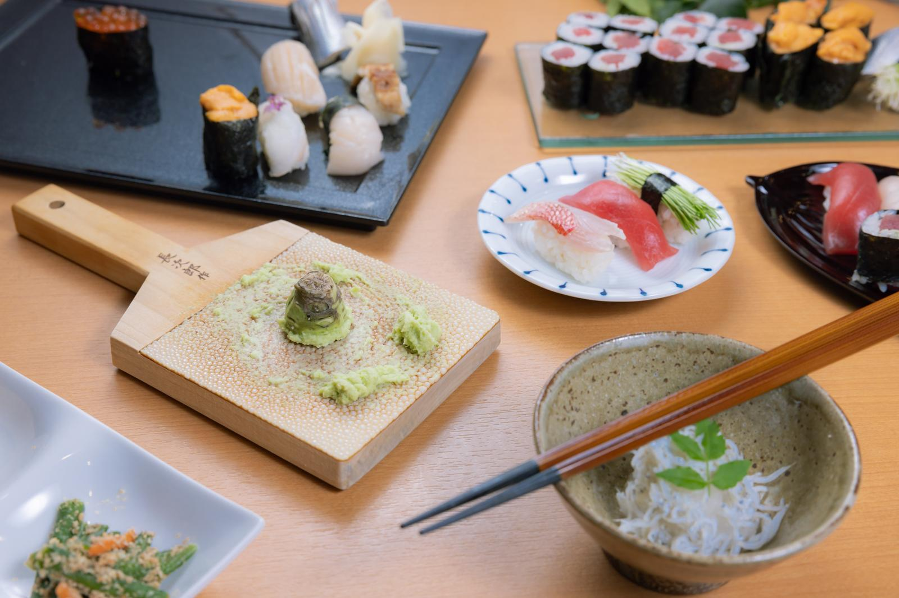

本命
淡くてキレる
2,000円未満
風の森 秋津穂 657
残した理由手に入りにくい入口を外したうえで、開けたてが分かりやすい一本として残した。

香りと味わいのチャート（さけのわ）
辛口甘口
飲み方の目安
雪冷え〜花冷え（5〜10℃）
最初の一本の置き方
- 苦い印象を外したい、最初の一本の夜に
- 雪冷え〜花冷え（5〜10℃）。よく冷やすほど、開けたてのシュワっと感が分かりやすい
楽天上の評価 ★4.71（レビュー51件）

ボクも長いこと、日本酒は選択肢に入っていなかった。芋焼酎ばかりで、居酒屋でも最初の一杯を頼んだあとは焼酎に戻っていた。変わったのは、カウンターで店員に勧められるまま花邑という一本を頼んだとき。それまで日本酒だと思っていたものとは、別の飲み物が出てきた感じだった。花邑自体はいつでも買えるものではないので、この特集の3本には入れていない。
そこから新政や仙禽、光栄菊のような新しい造りの方へ流れて、いまは後輩や同僚から「日本酒って何を頼んだらいいんですか」と聞かれる側になった。同じ方向の一本を渡すと、だいたい「知ってる日本酒と違う」と返ってくる。止めているのは味そのものより、昔ながらの日本酒のイメージのほうだと思っている。
この3本は、そのイメージを外しにいく方向で選んだ。ボクがはまった側の銘柄でも、手に入りにくいものは入口から外している。最初の一本にするなら 風の森 秋津穂 657。蔵元は5〜10℃をすすめていて、開けたてと、落ち着いてからでは表情が変わるとしている。鳳凰美田 純米吟醸 無濾過本生 は造り手が、食事中よりも食前・食後の一杯としてすすめている方向。仙禽 オーガニック ナチュール だけ価格が一段上がるが、15℃前後という冷やしすぎない置き方が他の2本と違うので残した。
外しやすいのは、最初から熱燗やコクの強い方向へ行くこと。そこで合わないと、苦手のイメージだけが残る。3本とも冷やす前提なので、冷蔵庫の場所を先に空けておけば足りる。
最初の一本は、味の強さより「何が先に来るか」で選ぶと外しにくい。香りが先か、すっきりした酸っぱさが先か、シュワっと感が先か。
選ぶときに見ているのは、だいたいこの3つ。
順位ではなく、向く夜と飲み方の違い。
| 銘柄 | 向く夜 | 飲み方 | 価格帯 |
|---|---|---|---|
| 風の森 秋津穂 657本命 | 苦い印象を外したい、最初の一本の夜に | 雪冷え〜花冷え（5〜10℃）。よく冷やすほど、開けたてのシュワっと感が分かりやすい | 2,000円未満 |
| 鳳凰美田 純米吟醸 無濾過本生 | 香りから入りたい、食前の一杯に | 雪冷え（5℃前後）。しっかり冷やして、少しずつ | 2,000円未満 |
| 仙禽 オーガニック ナチュール | 甘みを残して、ゆっくり飲みたい夜に | 涼冷え（15℃前後）。少し温度を上げると、甘みと酸っぱさが開く | 2,000〜4,000円 |
残した理由手に入りにくい入口を外したうえで、開けたてが分かりやすい一本として残した。
飲み方の目安
雪冷え〜花冷え（5〜10℃）
最初の一本の置き方
楽天上の評価 ★4.71（レビュー51件）
残した理由食事の途中ではなく、食前・食後の一杯として置くために残した。

飲み方の目安
雪冷え（5℃前後）
最初の一本の置き方
楽天上の評価 ★4.87（レビュー15件）
残した理由値段は一段上がるが、冷やしすぎない置き方が他の2本と違うので残した。

飲み方の目安
涼冷え（15℃前後）
最初の一本の置き方
少量で味の方向を試してから、一本にすればいい。
場面が違うときは、こちらから。
店で飲んだ一本店で飲んだあの一本を家で選び直す本命 · 清酒 八海山向く人 · 店で飲んだ一本を家でも買いたい人